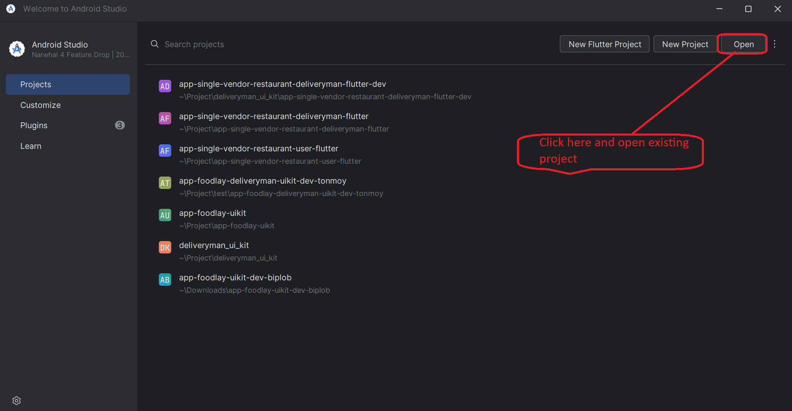
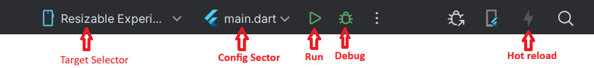
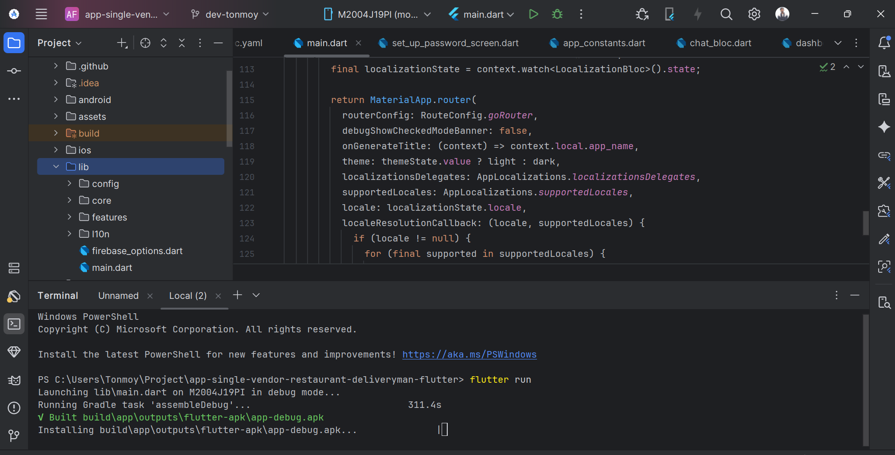
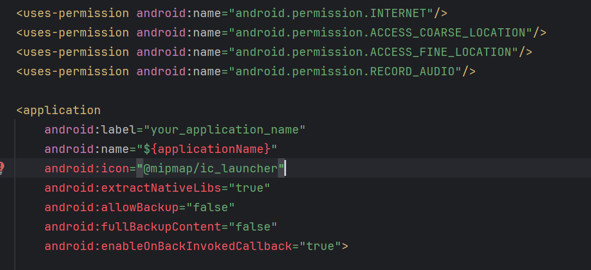
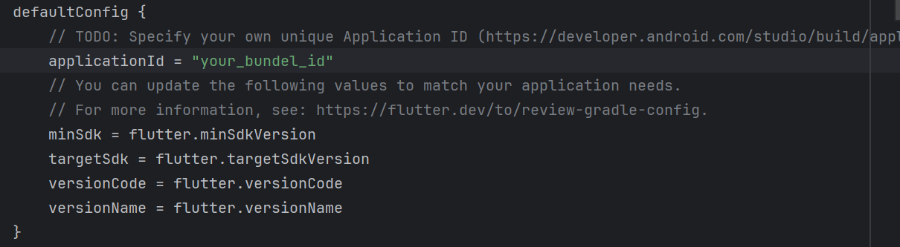
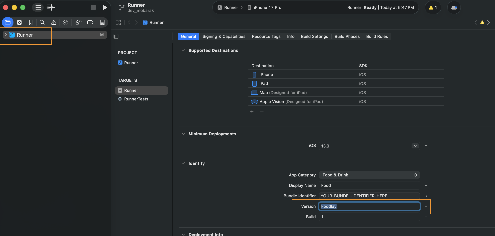
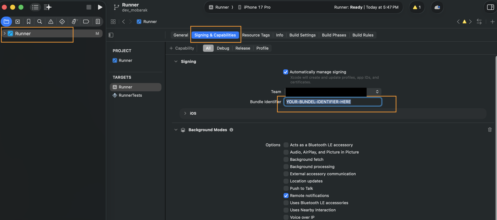

Overview
Foodlay Admin App is a complete, production-ready mobile administration application built with Flutter for Android and iOS. It gives restaurant owners and managers full control over orders, menu items, promotions, and business settings from their mobile device.
- A full admin app with dashboard, order management, food/menu management, and promotions
- GoRouter-based navigation with a bottom tab dashboard (Home, Food List, Orders)
- Localization, theming, DI, and Firebase messaging integrated
- Google Maps for address and delivery zone management
Basic Usage
- Sign in with admin credentials
- View dashboard with order summaries and analytics
- Manage orders: view, edit, cancel, refund, assign delivery
- Manage food items: create, update, set variations/addons, pricing, stock
- Set up coupons, BOGO offers, and happy hour promotions
- Configure business settings, invoices, and notifications
Requirements
- Flutter (Channel stable, 3.29.x) — Dart SDK ≥ 3.10.0
- Android Studio
- Xcode 16+ for IPA file build
- Devices or emulators
Environment Setup
Windows
- Download Android Studio Koala 2024.1.2 (bundled JDK 17).
- Ensure JDK 17 is used for Android builds.
- Run the installer (e.g., android-studio-ide-<version>-windows.exe).
- Follow the installation wizard; choose a custom location if needed.
- Select components (Android Studio, Android Virtual Device, etc.).
- Launch Android Studio and complete initial setup.
- Install SDK components when prompted.
- Optional: create an emulator in AVD Manager.
Install Flutter SDK (Windows)
- Download the latest stable Flutter for Windows.
- Extract to a folder, e.g., C:\flutter.
- Add C:\flutter\bin to PATH:
- Right‑click "This PC" → Properties → Advanced system settings → Environment Variables.
- Edit "Path" under System variables → New → add C:\flutter\bin.
flutter doctor
- In Android Studio: File → Settings → Plugins → Marketplace → install Flutter and Dart, then restart.
Linux
- Download Android Studio Koala 2024.1.2 (bundled JDK 17) for Linux.
- Ensure JDK 17 is used for Android builds.
- Extract the archive, move to a preferred location, run setup:
tar -xvzf android-studio-ide-<version>-linux.tar.gz sudo mv android-studio /YOUR_DIRECTORY cd /YOUR_DIRECTORY/android-studio/bin ./studio.sh
- Install Flutter SDK (Linux): download stable, extract, move to a preferred location, add flutter/bin to PATH.
tar xf flutter_linux_<version>.tar.xz sudo mv flutter /YOUR_DIRECTORY flutter doctor
- In Android Studio: Settings → Plugins → Marketplace → install Flutter and Dart, then restart.
macOS
- Download Android Studio for macOS (Koala 2024.1.2 with JDK 17).
- Ensure JDK 17 is used for Android builds.
- Open the DMG and drag Android Studio to Applications.
- Launch Android Studio; complete setup and install SDK components.
- Install Flutter SDK (macOS): download stable, extract, move to preferred location, add flutter/bin to PATH.
tar xf flutter_macos_<version>.tar.xz flutter doctor
- In Android Studio: Preferences → Plugins → Marketplace → install Flutter and Dart, then restart.
Mandatory Setup
Run an existing Flutter project on IDE
- Verify Flutter and IDE setup in a terminal:
flutter doctor
- Open the project in Android Studio or VS Code.
- If dependencies are not prompted, fetch them manually:
flutter pub get
- Run the app from IDE or terminal:
flutter run
Change App Logo & Icon
App Logo
- Go to <project>/assets/images/ and replace logo.png with your logo.
- Use the exact file name logo.png.
App Icon
- Generate icons using your preferred app icon generator.
- Android: replace android/app/src/main/res/mipmap-* with the generated icons.
- iOS: replace ios/Runner/Assets.xcassets with the generated Assets.xcassets.
Change App Name
- Update the application name in your constants file:
lib/config/util/app_constants.dart static const String appName = 'YOUR_APP_NAME';
- Android: set the label in AndroidManifest.xml:
android/app/src/main/AndroidManifest.xml android:label="YOUR_APP_NAME"
- iOS: set display name and bundle name in Info.plist:
ios/Runner/Info.plist <key>CFBundleDisplayName</key> <string>YOUR_APP_NAME</string> <key>CFBundleName</key> <string>YOUR_APP_NAME</string>
Change Base URL
- Install and set up your Admin Panel first.
- If admin login is https://your_domain.com/admin/auth/login then base URL is https://your_domain.com
- Open <project>/lib/config/util/app_constants.dart and set baseUrl.
- Do not add a trailing slash.
Wrong: static const String baseUrl = 'https://your_domain.com/'; Right: static const String baseUrl = 'https://your_domain.com';
Change App Package
- Find current package in android/app/src/main/AndroidManifest.xml.
- In Android Studio: right‑click project → Replace in Path.
- Enter old package as search, new package as replacement → Replace All.
Setup Firebase for Push Notification
Prerequisites
- Change your package name/bundle ID first.
- Create a Firebase project at console.firebase.google.com.
Install packages & configure
- Add Firebase packages and run the FlutterFire CLI to generate lib/firebase_options.dart
dart pub add firebase_core firebase_messaging dart pub global activate flutterfire_cli firebase login flutterfire configure
Android
- Register your Android app in Firebase using the exact applicationId (package name) from android/app/build.gradle.
- Add SHA‑1 and SHA‑256 fingerprints (from Gradle signing report or Play Console) for reliable delivery.
- Download google-services.json and place it at android/app/google-services.json (replace if exists).
- Ensure the Google Services Gradle plugin is applied in android/app/build.gradle.
- Create a solid white notification icon named notification_icon.png under android/app/src/main/res/drawable/.
- Targeting Android 13+: request POST_NOTIFICATIONS permission at runtime in your app code.
iOS
- Register your iOS app in the same Firebase project with your Bundle Identifier.
- Download GoogleService-Info.plist and add it to ios/Runner (ensure it is included in the Runner target in Xcode).
- Enable Push Notifications and Background Modes → Remote notifications under Signing & Capabilities.
- In Apple Developer, create an APNs Auth Key (.p8), then upload Key ID and Team ID to Firebase → Project Settings → Cloud Messaging.
- On iOS, notifications require user permission; request it at app startup.
Request permission & get token
- Request permission (iOS) and retrieve the device FCM token to test delivery.
final settings = await FirebaseMessaging.instance.requestPermission(
alert: true, badge: true, sound: true,
);
final token = await FirebaseMessaging.instance.getToken();
print('FCM token: $token');
Send a test notification
- Build and run on a real device.
- Open Firebase → Cloud Messaging → Send test message to the device token.
- Android requires Google Play services; iOS requires a real device (simulator cannot receive push).
Troubleshooting
- Token is null (iOS): verify APNs key uploaded, Push/Background modes enabled, run on a real device.
- Missing google-services.json: ensure file path is android/app/google-services.json.
- No notification on Android 13+: request POST_NOTIFICATIONS permission at runtime.
- Stuck delivery: reinstall the app after configuration changes and restart the IDE.
Android Secrets
- Create android/app/src/main/res/values/secrets.xml with required keys.
- Keys: google_maps_api_key, facebook_app_id, facebook_client_token
<resources> <string name="google_maps_api_key">YOUR_KEY</string> <string name="facebook_app_id">YOUR_APP_ID</string> <string name="facebook_client_token">YOUR_TOKEN</string> </resources>
Add Google Map API Key
- Generate your Google Maps API key.
- Enable: Directions API, Distance Matrix API, Geocoding API, Maps SDK for Android, Maps SDK for iOS, Maps JavaScript API, Places API, Geolocation API, Routes API, Places API (New).
- Enable billing on your Google Cloud project.
Android
<meta-data android:name="com.google.android.geo.API_KEY" android:value="YOUR_MAP_API_KEY_HERE"/>
iOS
GMSServices.provideAPIKey("YOUR_MAP_API_KEY_HERE")
Web
<script src="https://maps.googleapis.com/maps/api/js?key=YOUR_MAP_API_KEY_HERE"></script>
Quick Start
Pick a device
- Android: start an emulator from AVD Manager or connect a device with USB debugging enabled.
- iOS: open Simulator from Xcode (or connect a real device with Developer Mode enabled).
Run from IDE
- Open the project in Android Studio or VS Code.
- Select a target device from the device dropdown.
- Click Run ▶ to build and launch in debug mode.
Run from terminal
flutter pub get flutter run
Common checks
- Accept Android SDK licenses if prompted.
flutter doctor --android-licenses
- Verify a device is available.
flutter devices



Android & iOS Config
Android
- App ID: set applicationId under defaultConfig in android/app/build.gradle.
- App name: set android:label in android/app/src/main/AndroidManifest.xml.
- SDK levels: set minSdkVersion and targetSdkVersion in build.gradle.
- Signing: create a keystore, add key.properties, and reference it in the release signingConfig.
- Release build: flutter build apk or flutter build appbundle.
iOS
- Open ios/Runner.xcworkspace in Xcode.
- Bundle Identifier: set under General; select Team to enable automatic signing.
- Deployment Target: choose a supported iOS version.
- Capabilities: enable Push Notifications and Background Modes if using FCM.
- Release build: flutter build ipa or archive via Xcode Product → Archive.




Localization & RTL
Add New Language
- Create a new ARB file under lib/l10n/arb, e.g., lib/l10n/arb/app_es.arb
- Copy all keys from app_en.arb and translate only the values.
- Keep placeholders and variables intact to avoid runtime issues.
- Use valid ISO language/country codes when needed (ISO‑639 / ISO‑3166). Reference: ISO codes list
lib/l10n/arb/app_es.arb
{
"@@locale": "es",
"office": "Oficina",
"dashboard": "Tablero"
}
- Generate localizations (or hot‑restart if auto‑generated):
flutter gen-l10n
- Ensure the new locale is present in supportedLocales.
MaterialApp(
supportedLocales: AppLocalizations.supportedLocales,
// Or explicitly:
// supportedLocales: const [Locale('en'), Locale('es')],
)
Remove Existing Language
- Delete the ARB file from lib/l10n/arb and run flutter gen-l10n.
- If locales are declared manually, remove the Locale from supportedLocales.
Make Default Language
- Force a default locale by setting the locale on MaterialApp:
MaterialApp(
locale: const Locale('es'),
)
- Or rely on device language by not specifying locale.
RTL Support
- RTL locales like Arabic are supported automatically by Flutter's Directionality.
- Use directional-aware widgets; avoid hard-coded left/right paddings where possible.
Theme & Branding
Change App Color
- Open <project>/lib/config/theme/light_theme.dart and set primaryColor, foregroundColor, secondary, etc.
- Open <project>/lib/config/theme/dark_theme.dart and mirror the same updates for dark mode.
- Keep contrast and accessibility in mind for text and icons.
Change App Font
- Download a font family you like. See free options at Google Fonts.
- Unzip and copy TTF/OTF files to <project>/assets/font/
- Declare the font in pubspec.yaml under flutter → fonts.
flutter:
fonts:
- family: YOUR_FONT_FAMILY_NAME
fonts:
- asset: assets/font/YOUR_FONT_FILE_NAME.ttf
weight: YOUR_FONT_WEIGHT
- Set the font family in <project>/lib/config/util/app_constants.dart
static const String fontFamily = 'YOUR_FONT_FAMILY_NAME';
Change Notification Sound
- Android: replace <project>/android/app/src/main/res/raw/notification.wav with your file. Keep the filename notification.wav
- If there is notification.mp3 or notification.wav under <project>/assets, replace it too and keep the filename unchanged.
- Use a short and small audio file to avoid delivery issues.
Change Onboarding Text and Graphics
- Open lib/l10n/arb/app_en.arb. Update values for keys such as "on_boarding_1_title" and "on_boarding_1_description". Do not change keys.
"on_boarding_1_title": "YOUR_PREFERRED_TITLE", "on_boarding_1_description": "YOUR_PREFERRED_DESCRIPTION"
- Repeat for other languages (e.g., app_es.arb) and regenerate: flutter gen-l10n
- Graphics: replace <project>/assets/images/onboard_1.png, onboard_2.png, onboard_3.png with your PNGs using the same names.
Core Features
- Dashboard tabs: Home, Food List, Orders
- Dashboard analytics: order summaries, revenue overview
- Order management: list, details, status updates, cancel, refund
- Order editing: modify food items, delivery info, customer info, comments
- Order filters: by status, type, payment status, date range
- Delivery man assignment for orders
- Food management: create, edit, view details, variations & addons, pricing, stock
- Food filtering with advanced search
- Category management
- Product management: cuisines, labels, menu types, addons
- Coupon management: create, view, trash, customer-specific coupons
- BOGO (Buy One Get One) offers: create, view, trash
- Happy Hour scheduling and setup
- Business setup: currency, countries, working hours
- Invoice setup and configuration
- Notification setup: create, send, and view push notifications
- Refund request management: view, approve, deny, process refunds
- Chat and conversations with customers and deliverymen
- Profile settings and two-factor authentication (2FA)
- Tax configuration
- Notifications (Firebase) and local notifications
- Onboarding, splash, and settings screens
- File viewer for images/videos
Architecture
- Routing with GoRouter and dashboard ShellRoute
- State with Bloc/HydratedBloc; DI via get_it + injectable
- ThemeLocalizationWrapper and GlobalOverlayWrapper
- Firebase initialized in main with NotificationHelper and Crashlytics
- Clean architecture per feature: data (models, repositories), domain (services), presentation (bloc, screens, widgets)
- Error handling via FirebaseCrashlytics in release mode
- Responsive layout with mobile and desktop breakpoints
Routes
- Shell: Dashboard
- Home: /home
- Food List: /food_list
- Food List → Food Trash: /food_list/food_trash
- My Orders: /my_orders
- My Orders Filter: /my_orders_filter
- Order Details: /order_details
- Order Cancel: /order_cancel
- Order Refund: /order_refund
- Edit Food (Order): /edit_food
- Edit Comment (Order): /edit_comment
- Edit Delivery Info: /edit_delivery_info
- Edit Customer Info: /edit_customer_info
- Add New Food (Order): /add_new_food
- Food Setup: /food_setup
- Food Details: /food_details/:id
- Food Details → Variations & Addons: /food_details/:id/variations_addons
- Food Details → Edit Meta Data: /food_details/:id/edit_meta_data
- Food Details → Update Price: /food_details/:id/food_update_price
- Food Details → Update Stock: /food_details/:id/food_update_stock
- Product Management List: /product_management_list
- Product Management → Create: /product_management_list/create_product_management
- Product Management → Details: /product_management_list/product_management_details
- Product Management → Trash: /product_management_list/trash
- Category List: /category_list
- Filter: /filter
- Coupon List: /coupon_list
- Coupon List → View: /coupon_list/coupon_view
- Coupon List → Setup: /coupon_list/coupon_setup
- Coupon List → Setup → Customer List: /coupon_list/coupon_setup/customer_list
- Coupon List → Trash: /coupon_list/coupon_trash
- BOGO List: /bogo_list_screen
- BOGO List → View: /bogo_list_screen/bogo_view_screen
- BOGO List → Setup: /bogo_list_screen/bogo_setup_screen
- BOGO List → Trash: /bogo_list_screen/bogo_trash
- Happy Hour Setup: /happy_hour_setup_screen
- Notification Setup: /notification_setup
- Notification Setup → Send: /notification_setup/send-notification
- Notification Setup → View: /notification_setup/view
- Invoice Setup: /invoice_setup
- Business Setup: /business_setup
- Business Setup → Create Currency: /business_setup/create_currency
- Refund Request: /refund_request
- Refund Request → Details: /refund_request/refund_request_details
- Refund Request → Denied: /refund_request/refund_denied
- Refund Request → Process: /refund_request/refund_process
- Refund Request Filter: /refund_request_filter
- Chat: /chat
- Chat → Conversation: /chat/conversation
- Profile Settings: /profile_settings
- Settings: /settings
- Notification: /notification
- Splash: /splash
- Onboarding: /onboarding_screen
- Login: /login
- Forget Password: /forget_login
- Set Up Password: /set_up_password
- Verification: /verification
- File Viewer: /file_viewer
Project Structure
- lib/config/route: route_config.dart
- lib/config/theme: light_theme.dart, dark_theme.dart, custom_theme_colors.dart
- lib/config/util: app_constants.dart, assets.gen.dart, dimensions.dart, styles.dart
- lib/core: data (API client, models, storage), dependency injection, helpers (notifications, utilities)
- lib/features: account, address, bogo, business_setup, cart, category, chat, common, coupon, dashboard, file_viewer, filter, food, happy_hour_setup, home, invoice_setup, login, menu, notification, notification_setup, offers, onboarding, order, product_management, profile, refund, review, search, settings, splash, tax
- lib/l10n/arb: app_en.arb, app_ar.arb, app_bn.arb, app_es.arb, app_hi.arb
Run and Debug
From IDE
- Open the project in Android Studio or VS Code.
- Select a device (emulator/simulator/USB) from the device picker.
- Click Run ▶ to start in debug mode. Use hot reload for UI changes.
- Set breakpoints in Dart files; inspect Variables and Call Stack.
- Open Flutter DevTools from the IDE for Performance, Memory, and Logs.
From terminal
flutter pub get flutter devices flutter run
- Hot reload: press r. Hot restart: R. Quit: q.
- Run on a specific device with flutter run -d <deviceId>.
- Attach to an already running app:
flutter attach
Logging
- View framework/app logs:
flutter logs
- Android (advanced):
adb logcat | grep -i your.package.name
- iOS Simulator (advanced):
xcrun simctl spawn booted log stream --predicate 'process == "Runner"'
Profile performance
- Run with instrumentation and use DevTools → Performance:
flutter run --profile
Clean & rebuild
- If builds behave unexpectedly, clean and fetch dependencies again:
flutter clean flutter pub get
Build and Release
Android
- Ensure release signing is configured. See Signing & Release section.
- Release APK (quick test on device):
flutter build apk --release
- App Bundle (required for Play Store):
flutter build appbundle
- Secure release (obfuscation + symbols):
flutter build apk --release --obfuscate --split-debug-info=build/app/outputs/symbols
- Secure App Bundle (preferred for Play Store):
flutter build appbundle --release --obfuscate --split-debug-info=build/app/outputs/symbols
- Split per ABI for smaller APKs:
flutter build apk --split-per-abi
- Artifacts:
build/app/outputs/flutter-apk/app-release.apk build/app/outputs/bundle/release/app-release.aab
- Install to test on device:
flutter install -d <deviceId>
- Set version in android/app/build.gradle before release:
defaultConfig {
versionCode 2
versionName "1.1.0"
}
iOS
- Prerequisites: Apple Developer account with signing and provisioning configured in Xcode.
- Build IPA via CLI:
flutter build ipa
- Archive and distribute via Xcode:
- Open ios/Runner.xcworkspace → select device/Any iOS Device (Archive) → Product → Archive.
- In Organizer → Distribute App → choose App Store Connect or Ad Hoc.
- Update Version and Build in Xcode General tab before archiving.
- CLI artifact path:
build/ios/ipa/Runner.ipa
Signing & Release
Android: Keystore & Signing
- Create a private keystore (keep it secure and out of git):
keytool -genkeypair -v -keystore ~/keystores/foodlay-admin-release.keystore \ -alias foodlayadmin -keyalg RSA -keysize 2048 -validity 36500
- Create key.properties in project root (git‑ignored):
storePassword=YOUR_STORE_PASSWORD keyPassword=YOUR_KEY_PASSWORD keyAlias=foodlayadmin storeFile=/ABSOLUTE/PATH/TO/foodlay-admin-release.keystore
- Load and apply signing in android/app/build.gradle and enable shrinking for release:
def keystoreProperties = new Properties()
def keystorePropertiesFile = rootProject.file('key.properties')
if (keystorePropertiesFile.exists()) {
keystoreProperties.load(new FileInputStream(keystorePropertiesFile))
}
android {
signingConfigs {
release {
storeFile file(keystoreProperties['storeFile'])
storePassword keystoreProperties['storePassword']
keyAlias keystoreProperties['keyAlias']
keyPassword keystoreProperties['keyPassword']
}
}
buildTypes {
release {
signingConfig signingConfigs.release
minifyEnabled true
shrinkResources true
proguardFiles getDefaultProguardFile('proguard-android-optimize.txt'), 'proguard-rules.pro'
}
}
}
Android: Play Console
- Use Play App Signing; first upload your .aab to register the upload key.
- Complete store listing, privacy policy, content rating, and data safety forms.
- Test all admin features on release builds before rollout.
iOS: Signing & Provisioning
- Open ios/Runner.xcworkspace → select Team → enable Automatically manage signing.
- Ensure a Distribution profile for release and correct Bundle Identifier.
- Capabilities: Push Notifications and Background Modes → Remote notifications.
iOS: Archive & Submit
- Update Version and Build in Xcode (General tab).
- Product → Archive → Organizer → Distribute App → App Store Connect → Upload.
- Fill App Store Connect metadata and privacy questions.
Release Checklist
- Verify production API endpoints and disable verbose logs.
- Confirm order management, food CRUD, and promotion flows work on release builds.
- Update app icons, splash, and display name for production.
- Back up keystore and signing credentials in a secure vault.
API Usage
Base URL & Environments
- Keep separate API base URLs for dev, stage, and prod.
- Inject at build time or load securely; do not hardcode secrets.
- Pass runtime values when needed:
flutter run --dart-define=API_BASE_URL=https://api.example.com
Authentication
- Use token-based auth with short-lived access token and refresh token.
- Admin login endpoint: /api/v1/admin/auth/login
- Attach Authorization header to protected requests:
Authorization: Bearer <ACCESS_TOKEN>
- Refresh tokens on 401 via /api/v1/admin/auth/refresh; queue and retry pending requests after refresh; logout if refresh fails.
- Two-factor authentication supported via /api/v1/admin/auth/verify-2fa.
- Store refresh tokens in platform-secure storage.
Common headers
- Accept: application/json
- Accept-Language: current locale code
- X-App-Version: app version/build
Key API Endpoints
- Dashboard: /api/v1/admin/dashboard
- Orders: /api/v1/admin/orders
- Items: /api/v1/admin/item
- Categories: /api/v1/admin/categories
- Cuisines: /api/v1/admin/cuisine
- Menu Types: /api/v1/admin/menu-type
- Labels: /api/v1/admin/label
- Addons: /api/v1/admin/addon
- Coupons: /api/v1/admin/coupon
- BOGO: /api/v1/admin/bogo
- Happy Hour: /api/v1/admin/happy-hour
- Refund Requests: /api/v1/admin/refund-requests
- Tax: /api/v1/admin/tax
- Notifications: /api/v1/admin/notifications
- Chat: /api/v1/admin/chats
- Profile: /api/v1/admin/profile
- Business Setup: /api/v1/admin/business/setup
- Currency: /api/v1/admin/currency
- Invoice Setup: /api/v1/admin/invoice-setup
Pagination & filtering
- Default pagination limit: 10 items per page.
- Use page/limit or cursor; maintain hasMore based on response payload.
- Filter orders by status, type, payment status, and date ranges.
Error handling
- Map 400/401/403/404/429/5xx to meaningful messages and fallback states.
- Retry safe idempotent calls only; prompt user on repeated failures.
Retry, timeout, and backoff
- Use connection/receive timeouts to avoid hangs.
- Exponential backoff with jitter for transient errors; avoid retrying non-idempotent requests.
Security
- Use HTTPS in production; never log tokens or PII.
- Persist sensitive values using platform-secure storage APIs.
Sample requests (cURL)
- Admin login:
curl -X POST https://api.example.com/api/v1/admin/auth/login \
-H "Content-Type: application/json" \
-d '{"email":"admin@example.com","password":"your_password"}'
- Fetch orders with filters:
curl "https://api.example.com/api/v1/admin/orders?page=1&limit=10&status=pending" \ -H "Authorization: Bearer <ACCESS_TOKEN>" \ -H "Accept: application/json" \ -H "Accept-Language: en"
Testing
Unit & Widget Tests
- Put tests under test/ and name files *_test.dart.
- Run all tests:
flutter test
- Run a specific test file or filter by test name:
flutter test test/path/to/widget_test.dart flutter test --plain-name "shows order list"
- Increase concurrency to speed up suites where appropriate:
flutter test --concurrency=4
Integration Tests
- Place tests in integration_test/, start an emulator/simulator or connect a device.
- Run all integration tests:
flutter test integration_test
- Target a specific device (find with flutter devices):
flutter test integration_test -d <deviceId>
Coverage
- Generate coverage and open a local HTML report (requires lcov):
flutter test --coverage genhtml coverage/lcov.info -o coverage/html open coverage/html/index.html
Best Practices
- Isolate business logic with fakes/mocks; avoid real network calls in tests.
- Use golden tests for admin dashboard and form layouts where consistency matters.
- Keep tests deterministic and independent; avoid sharing mutable global state.
Update Procedure
When a new version is released, you will receive the update package containing either changed files only or the full source code. You can choose whichever method suits your setup best.
Before You Update
- Back up your entire project folder
- Note any custom changes you have made to the source code
- Ensure your development environment meets the latest version's requirements
- Download the update package from your purchase account
Option A: Apply Changed Files Only
This method is recommended if you have made custom modifications and want to preserve them.
- Step 1: Extract the update package. Locate the folder containing only the changed files.
- Step 2: Copy the changed files into your existing project, replacing the corresponding files in their respective directories.
- Step 3: If you have custom modifications in any of the replaced files, manually merge your changes back into the updated files.
- Step 4: Run flutter pub get to update dependencies.
- Step 5: Clean and rebuild the project:
flutter clean flutter pub get flutter run
Option B: Replace with Full Source Code
This method is recommended for a clean update when you have not made custom modifications.
- Step 1: Extract the update package. Locate the full source code folder.
- Step 2: Replace your entire project directory with the new full source code.
- Step 3: Restore your configuration files and assets:
- Firebase configuration files (google-services.json, GoogleService-Info.plist)
- App icons and splash screen assets
- Package name / bundle identifier settings
- API base URL and any environment-specific values
- Signing keys and keystore files
- Step 4: Run flutter pub get to install dependencies.
- Step 5: Clean and rebuild the project:
flutter clean flutter pub get flutter run
Post-Update Checklist
- Verify the app builds and runs without errors on both Android and iOS
- Test core functionality: login, dashboard, order management, food CRUD, and promotions
- Confirm push notifications are working
- Validate that all custom modifications have been reapplied (if using Option A)
- Run on a physical device to verify full functionality before releasing
Troubleshooting
Quick checks
- Verify setup and toolchain:
flutter doctor -v
- Clear caches and re-fetch dependencies:
flutter clean flutter pub get
Android build issues
- Gradle/AGP mismatch: update Gradle wrapper and Android Gradle Plugin together.
android/gradle/wrapper/gradle-wrapper.properties distributionUrl=https\://services.gradle.org/distributions/gradle-8.x-all.zip
- Update AGP in android/build.gradle:
classpath "com.android.tools.build:gradle:8.x.y"
- compileSdk/targetSdk errors: align in android/app/build.gradle.
- Activity exported error (Android 12+): set exported on activities with intent filters.
<activity android:name=".MainActivity" android:exported="true">...</activity>
- INSTALL_FAILED_VERSION_DOWNGRADE or SIGNATURE conflict: uninstall previous app.
adb uninstall your.package.name
- google-services.json not found: ensure file exists at android/app/google-services.json.
iOS build issues
- CocoaPods errors: update/install pods in ios/ then rebuild.
cd ios pod repo update pod install --repo-update
- Clean DerivedData when Xcode builds behave oddly:
rm -rf ~/Library/Developer/Xcode/DerivedData
- Deployment target mismatch: align Podfile platform with Xcode target.
- Signing/profile issues: set Team, Bundle Identifier, Capabilities.
Firebase push
- No token on iOS: use real device, enable Push/Background Modes, upload APNs key to Firebase.
- Android 13+ no notifications: request POST_NOTIFICATIONS permission at runtime.
- Reinstall after config changes to refresh tokens.
Network & SSL
- CERTIFICATE_VERIFY_FAILED: use HTTPS, correct device time, avoid self‑signed certs in prod.
- Apply timeouts and limited retries with backoff for transient failures.
Code generation
- Generated files missing or stale:
flutter pub run build_runner build --delete-conflicting-outputs
Maps
- Add google_maps_api_key to secrets.xml; verify platform SDKs enabled and key restrictions are correct.